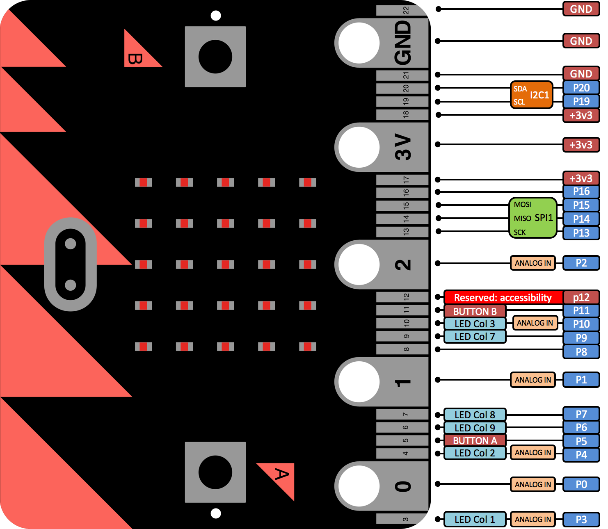

#uBit.io
##Overview
uBit.io provides a means of accessing the pins exposed on the edge connector,
enabling Analog and Digital Input/Output operations. Some pins can also perform
basic touch sensing through resistance detection.
There are 6 Analog capable pins which can be used to generate Analog wave forms and approximate Analog inputs. There is only one Analog to Digital converter on the NRF51822, which prevents concurrent analog to digital conversions.
Analog waveforms are simulated via Pulse Width Modulation generated by software. As such, there is a limit of 3 concurrent PWM outputs.
There are two ways of accessing pins on the edge connector:
uBit.io.P0.setDigitalValue(1)- Would configure P0 as a digital output, and set that pin HI.uBit.io.pin[1].setDigitalValue(1)- Would configure P1 as a digital output, and set that pin HI.
By design, the operation of the pins on the edge connector are dynamic, and can swap between modes based on the method that as been called.
For example:
while(1)
{
uBit.io.P0.setDigitalValue(1);
uBit.sleep(1000);
uBit.io.P0.setServoValue(90);
uBit.sleep(1000);
}
Will transition between Digital and Analog output every second.
Shared Functionality¶
As well as being General Purpose Input Output (GPIO) pins, some pins on the micro:bit have other functionality used internally by the micro:bit.
Therefore, some functionality on the micro:bit may have to be disabled in order to use some GPIO pins.
This is illustrated by the diagram below:

##Message Bus ID
| Constant | Value | Capability | | ————- |————-|————-| | MICROBIT_ID_IO_P0 | 7 | Analog, digital and touch | | MICROBIT_ID_IO_P1 | 8 | Analog, digital and touch | | MICROBIT_ID_IO_P2 | 9 | Analog, digital and touch | | MICROBIT_ID_IO_P3 | 10 | Analog and digital | | MICROBIT_ID_IO_P4 | 11 | Analog and digital | | MICROBIT_ID_IO_P5 | 12 | Digital only | | MICROBIT_ID_IO_P6 | 13 | Digital only | | MICROBIT_ID_IO_P7 | 14 | Digital only | | MICROBIT_ID_IO_P8 | 15 | Digital only | | MICROBIT_ID_IO_P9 | 16 | Digital only | | MICROBIT_ID_IO_P10 | 17 | Analog and digital | | MICROBIT_ID_IO_P11 | 18 | Digital only | | MICROBIT_ID_IO_P12 | 19 | Digital only | | MICROBIT_ID_IO_P13 | 20 | Digital only | | MICROBIT_ID_IO_P14 | 21 | Digital only | | MICROBIT_ID_IO_P15 | 22 | Digital only | | MICROBIT_ID_IO_P16 | 23 | Digital only | | MICROBIT_ID_IO_P19 | 24 | Digital only | | MICROBIT_ID_IO_P20 | 25 | Digital only |
##Message Bus Events
When isTouched() is called, provided that the selected pin has touch capabilities
(outlined above), an instance of button will be created. Listeners
can therefore be placed using the desired pins’ ID, with the exact same events
produced by a standard button.
uBit.messageBus.listen(MICROBIT_ID_IO_P0, MICROBIT_EVT_ANY, someFunction);
uBit.io.P0.isTouched();
| Constant | Value | | ————- |————-| | MICROBIT_BUTTON_EVT_DOWN | 1 | | MICROBIT_BUTTON_EVT_UP | 2 | | MICROBIT_BUTTON_EVT_CLICK | 3 | | MICROBIT_BUTTON_EVT_LONG_CLICK | 4 | | MICROBIT_BUTTON_EVT_HOLD | 5 | | MICROBIT_BUTTON_EVT_DOUBLE_CLICK | 6 |
#API
[comment]: <> ({“className”:”MicroBitPin”})
##Constructor
####MicroBitPin(
#####Parameters
intid - the unique EventModel id of this component.
PinNamename - the mbed PinName for this MicroBitPin instance.
PinCapabilitycapability - the capabilities this MicroBitPin instance should have. (PIN_CAPABILITY_DIGITAL, PIN_CAPABILITY_ANALOG, PIN_CAPABILITY_AD, PIN_CAPABILITY_ALL)
#####Example
MicroBitPin P0(MICROBIT_ID_IO_P0, MICROBIT_PIN_P0, PIN_CAPABILITY_ALL);
##setDigitalValue
####
#####Parameters
intvalue - 0 (LO) or 1 (HI)
#####Returns MICROBIT_OK on success, MICROBIT_INVALID_PARAMETER if value is out of range, or MICROBIT_NOT_SUPPORTED if the given pin does not have digital capability. #####Example
MicroBitPin P0(MICROBIT_ID_IO_P0, MICROBIT_PIN_P0, PIN_CAPABILITY_BOTH);
P0.setDigitalValue(1); // P0 is now HI
##getDigitalValue
####
#####Returns 1 if this input is high, 0 if input is LO, or MICROBIT_NOT_SUPPORTED if the given pin does not have digital capability. #####Example
MicroBitPin P0(MICROBIT_ID_IO_P0, MICROBIT_PIN_P0, PIN_CAPABILITY_BOTH);
P0.getDigitalValue(); // P0 is either 0 or 1;
####
#####Parameters
PinModepull - one of the mbed pull configurations: PullUp, PullDown, PullNone
#####Returns 1 if this input is high, 0 if input is LO, or MICROBIT_NOT_SUPPORTED if the given pin does not have digital capability. #####Example
MicroBitPin P0(MICROBIT_ID_IO_P0, MICROBIT_PIN_P0, PIN_CAPABILITY_BOTH);
P0.getDigitalValue(PullUp); // P0 is either 0 or 1;
##setAnalogValue
####
#####Parameters
intvalue - the level to set on the output pin, in the range 0 - 1024
#####Returns
MICROBIT_OK on success, MICROBIT_INVALID_PARAMETER if value is out of range, or MICROBIT_NOT_SUPPORTED if the given pin does not have analog capability.
##setServoValue
####
A value of 180 sets the duty cycle to be 2500us, and a value of 0 sets the duty cycle to be 500us by default.
This range can be modified to fine tune, and also tolerate different servos.
#####Parameters
intvalue - the level to set on the output pin, in the range 0 - 180.
#####Returns
MICROBIT_OK on success, MICROBIT_INVALID_PARAMETER if value is out of range, or MICROBIT_NOT_SUPPORTED if the given pin does not have analog capability.
####
A value of 180 sets the duty cycle to be 2500us, and a value of 0 sets the duty cycle to be 500us by default.
This range can be modified to fine tune, and also tolerate different servos.
#####Parameters
intvalue - the level to set on the output pin, in the range 0 - 180.
intrange - which gives the span of possible values the i.e. the lower and upper bounds (center +/- range/2). Defaults to MICROBIT_PIN_DEFAULT_SERVO_RANGE.
#####Returns
MICROBIT_OK on success, MICROBIT_INVALID_PARAMETER if value is out of range, or MICROBIT_NOT_SUPPORTED if the given pin does not have analog capability.
####
A value of 180 sets the duty cycle to be 2500us, and a value of 0 sets the duty cycle to be 500us by default.
This range can be modified to fine tune, and also tolerate different servos.
#####Parameters
intvalue - the level to set on the output pin, in the range 0 - 180.
intrange - which gives the span of possible values the i.e. the lower and upper bounds (center +/- range/2). Defaults to MICROBIT_PIN_DEFAULT_SERVO_RANGE.
intcenter - the center point from which to calculate the lower and upper bounds. Defaults to MICROBIT_PIN_DEFAULT_SERVO_CENTER
#####Returns
MICROBIT_OK on success, MICROBIT_INVALID_PARAMETER if value is out of range, or MICROBIT_NOT_SUPPORTED if the given pin does not have analog capability.
##getAnalogValue
####
#####Returns the current analogue level on the pin, in the range 0 - 1024, or MICROBIT_NOT_SUPPORTED if the given pin does not have analog capability. #####Example
MicroBitPin P0(MICROBIT_ID_IO_P0, MICROBIT_PIN_P0, PIN_CAPABILITY_BOTH);
P0.getAnalogValue(); // P0 is a value in the range of 0 - 1024
##isInput
####
#####Returns
1 if pin is an analog or digital input, 0 otherwise.
##isOutput
####
#####Returns
1 if pin is an analog or digital output, 0 otherwise.
##isDigital
####
#####Returns
1 if pin is digital, 0 otherwise.
##isAnalog
####
#####Returns
1 if pin is analog, 0 otherwise.
##isTouched
####
Users can also subscribe to MicroBitButton events generated from this pin.
#####Returns 1 if pin is touched, 0 if not, or MICROBIT_NOT_SUPPORTED if this pin does not support touch capability. #####Example
MicroBitMessageBus bus;
MicroBitPin P0(MICROBIT_ID_IO_P0, MICROBIT_PIN_P0, PIN_CAPABILITY_ALL);
if(P0.isTouched())
{
//do something!
}
// subscribe to events generated by this pin!
bus.listen(MICROBIT_ID_IO_P0, MICROBIT_BUTTON_EVT_CLICK, someFunction);
##setServoPulseUs
####
#####Parameters
intpulseWidth - the desired pulse width in microseconds.
#####Returns
MICROBIT_OK on success, MICROBIT_INVALID_PARAMETER if value is out of range, or MICROBIT_NOT_SUPPORTED if the given pin does not have analog capability.
##setAnalogPeriod
####
#####Parameters
intperiod - The new period for the analog output in milliseconds.
#####Returns
MICROBIT_OK on success, or MICROBIT_NOT_SUPPORTED if the given pin is not configured as an analog output.
##setAnalogPeriodUs
####
#####Parameters
intperiod - The new period for the analog output in microseconds.
#####Returns
MICROBIT_OK on success, or MICROBIT_NOT_SUPPORTED if the given pin is not configured as an analog output.
##getAnalogPeriodUs
####
#####Returns
the period on success, or MICROBIT_NOT_SUPPORTED if the given pin is not configured as an analog output.
##getAnalogPeriod
####
#####Returns
the period on success, or MICROBIT_NOT_SUPPORTED if the given pin is not configured as an analog output.
##setPull
####
#####Parameters
PinModepull - one of the mbed pull configurations: PullUp, PullDown, PullNone
#####Returns
MICROBIT_NOT_SUPPORTED if the current pin configuration is anything other than a digital input, otherwise MICROBIT_OK.
##eventOn
####
MICROBIT_PIN_EVENT_ON_EDGE - Configures this pin to a digital input, and generates events whenever a rise/fall is detected on this pin. (MICROBIT_PIN_EVT_RISE, MICROBIT_PIN_EVT_FALL) MICROBIT_PIN_EVENT_ON_PULSE - Configures this pin to a digital input, and generates events where the timestamp is the duration that this pin was either HI or LO. (MICROBIT_PIN_EVT_PULSE_HI, MICROBIT_PIN_EVT_PULSE_LO) MICROBIT_PIN_EVENT_ON_TOUCH - Configures this pin as a makey makey style touch sensor, in the form of a MicroBitButton . Normal button events will be generated using the ID of this pin. MICROBIT_PIN_EVENT_NONE - Disables events for this pin.
#####Parameters
inteventType - One of: MICROBIT_PIN_EVENT_ON_EDGE, MICROBIT_PIN_EVENT_ON_PULSE, MICROBIT_PIN_EVENT_ON_TOUCH, MICROBIT_PIN_EVENT_NONE
#####Returns MICROBIT_OK on success, or MICROBIT_INVALID_PARAMETER if the given eventype does not match #####Example
MicroBitMessageBus bus;
MicroBitPin P0(MICROBIT_ID_IO_P0, MICROBIT_PIN_P0, PIN_CAPABILITY_BOTH);
P0.eventOn(MICROBIT_PIN_EVENT_ON_PULSE);
void onPulse(MicroBitEvent evt)
{
int duration = evt.timestamp;
}
bus.listen(MICROBIT_ID_IO_P0, MICROBIT_PIN_EVT_PULSE_HI, onPulse, MESSAGE_BUS_LISTENER_IMMEDIATE)
!!! note In the MICROBIT_PIN_EVENT_ON_PULSE mode, the smallest pulse that was reliably detected was 85us, around 5khz. If more precision is required, please use the InterruptIn class supplied by ARM mbed.
[comment]: <> ({“end”:”MicroBitPin”})